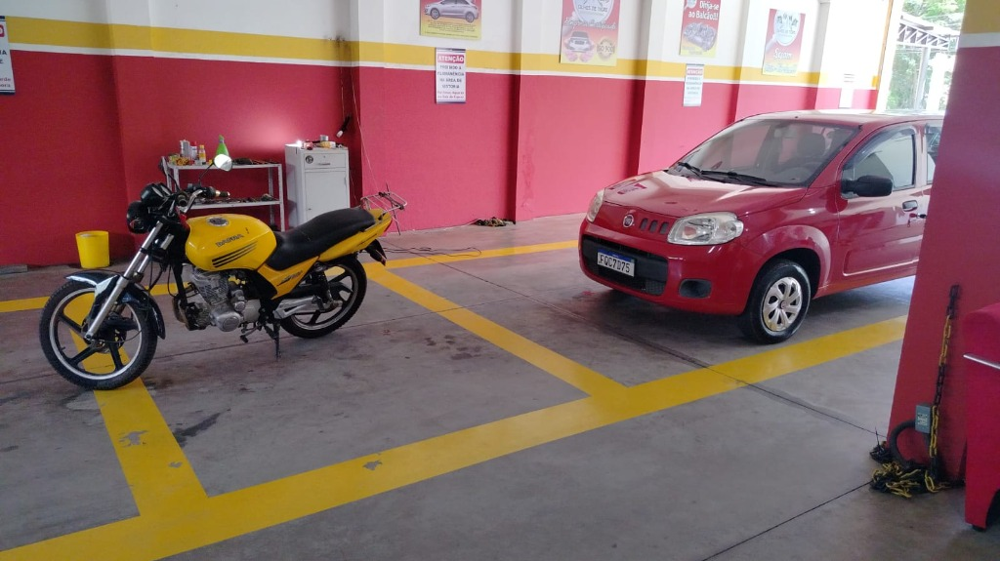

Vistoria para Transferência
Vistoria obrigatória para transferência de propriedade de veículos no DETRAN-SP. Necessária na compra e venda de automóveis usados.
Saiba mais
Precisando realizar a vistoria do seu veículo? Conte com a Olhos de Tigre Vistorias Automotivas em Jarinu/SP. Atendimento profissional, orientação especializada e agilidade no processo de regularização junto ao DETRAN.
Realizamos vistorias automotivas em Jarinu/SP com estrutura profissional, equipamentos adequados e orientação completa para regularização do seu veículo junto ao DETRAN.
Vistoria obrigatória para transferência de propriedade de veículos no DETRAN-SP. Necessária na compra e venda de automóveis usados.
Saiba maisVerificação dos elementos de identificação do veículo (chassi, motor, placas). Exigida pelo DETRAN em diversos procedimentos administrativos.
Saiba maisVistoria completa para automóveis, caminhonetes e utilitários. Atendemos todos os tipos de veículos leves conforme exigências do DETRAN.
Saiba maisVistoria especializada para motocicletas, motonetas e ciclomotores. Atendemos transferência, regularização e demais procedimentos junto ao DETRAN.
Saiba maisObrigatória quando há alteração nas características originais do veículo, como mudança de cor, motor, carroceria ou outros itens registrados.
Saiba maisAuxílio na regularização de veículos com pendências documentais. Orientação sobre o processo junto ao DETRAN-SP para normalização do registro.
Saiba maisVistoria exigida quando o proprietário transfere a base do veículo para outro município ou estado, com atualização do registro no DETRAN.
Saiba maisAnálise detalhada do veículo para compra segura. Verificação de sinistros, adulterações e histórico. Essencial antes de adquirir um veículo usado.
Saiba maisConheça os atributos que fazem da Olhos de Tigre Vistorias a escolha certa para a regularização do seu veículo em Jarinu e região.
Nossa equipe está preparada para realizar vistorias veiculares com atenção aos detalhes e conhecimento técnico dos procedimentos exigidos pelo DETRAN.
Explicamos cada etapa do processo, quais documentos levar, como funciona o procedimento no DETRAN e orientamos sobre todos os trâmites necessários.
Contamos com espaço físico adequado para a realização das vistorias, com área demarcada para posicionamento do veículo e equipamentos para inspeção.
Trabalhamos com total transparência. Informamos claramente o que a vistoria cobre, o que é verificado e quais são os próximos passos após o serviço.
Situados na Av. Ângelo Bernucci, 372, no Centro de Jarinu/SP — de fácil acesso para moradores de Jarinu, Atibaia, Bragança Paulista e região.
A Olhos de Tigre Vistorias possui certificação ISO 9001 e opera seguindo padrões de qualidade rigorosos no atendimento e execução das vistorias automotivas.
Dispomos de espaço físico adequado para a realização de vistorias veiculares, com área demarcada, organizada e preparada para atender automóveis e motocicletas.
Nosso espaço conta com área específica para posicionamento e inspeção de veículos, incluindo automóveis e motocicletas. O ambiente é organizado, com demarcações no piso para garantir um atendimento padronizado.
Atendemos os moradores de Jarinu e cidades da região, como Atibaia, Bragança Paulista e Campo Limpo Paulista, com orientação completa sobre os procedimentos necessários no DETRAN-SP.
Agendar minha vistoriaEntenda o processo de agendamento e realização da vistoria veicular na Olhos de Tigre Vistorias em Jarinu/SP.
Entre em contato pelo WhatsApp ou telefone para tirar dúvidas, verificar o tipo de vistoria necessária e agendar o melhor horário para o atendimento.
Nossa equipe orienta sobre os documentos necessários para cada tipo de vistoria — CRV/DUT, CNH, CPF e demais documentos conforme o serviço.
Dirija-se ao nosso endereço na Av. Ângelo Bernucci, 372, Centro, Jarinu/SP, com o veículo e a documentação. Nossa equipe realizará a vistoria.
Após a vistoria, você recebe o laudo e toda a orientação necessária sobre os próximos passos para regularização no DETRAN-SP.
Veja o que os clientes dizem sobre o atendimento da Olhos de Tigre Vistorias Automotivas em Jarinu/SP.
"Fui realizar a vistoria para transferência e fui muito bem atendido. A equipe é prestativa, explicou tudo direitinho e o processo foi rápido. Recomendo de olhos fechados para quem mora em Jarinu e precisa regularizar o veículo."
"Recomendo! Fui realizar a vistoria da minha moto e fui atendida com rapidez e simpatia. O local é bem organizado, com espaço dedicado para motos. Saí com todas as dúvidas esclarecidas sobre o próximo passo no DETRAN."
"Empresa séria, transparente e ágil. Fiz a vistoria de identificação veicular sem complicações. Me informaram de todos os documentos por antecedência via WhatsApp, o que facilitou muito. Ótimo atendimento!"
Consulte as avaliações verificadas diretamente no Google Maps.
Ver Avaliações no GoogleEstamos localizados no Centro de Jarinu/SP. Visite-nos ou entre em contato pelo WhatsApp antes de comparecer.
Encontre respostas para as principais dúvidas sobre vistoria veicular, transferência, documentação e atendimento em Jarinu/SP.
Entre em contato pelo WhatsApp, tire suas dúvidas e agende sua vistoria veicular em Jarinu/SP. Atendimento rápido e orientação especializada.